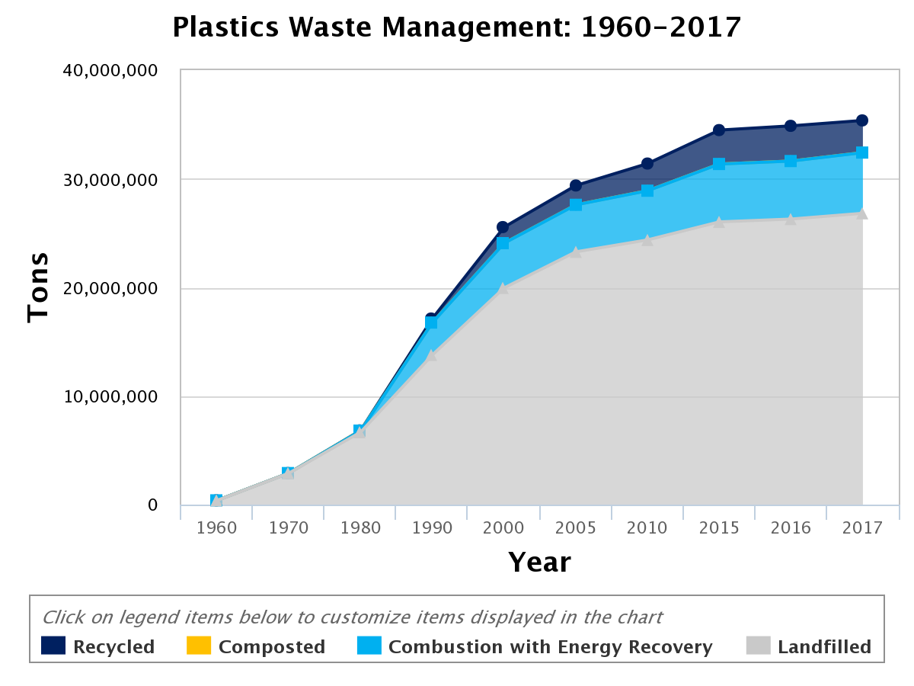

Planet or Plastic?
A whopping 91% of plastic isn't recycled. Billions of tons of plastic
have been made over the past decades, and much of it is becoming trash
and litter.
But how did we get here?

